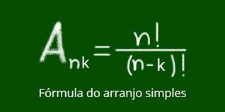

Arranjo
Os arranjos são outro conceito importante na teoria de combinatória, eles levam em consideração a ordem dos elementos. Um arranjo é uma seleção ordenada de elementos de um conjunto. Existem dois tipos principais de arranjos: arranjos simples e arranjos com repetição.
- Arranjos Simples:
Em um arranjo simples, você seleciona um certo número de elementos de um conjunto sem repetições e coloca esses elementos em uma ordem específica. A fórmula para calcular o número de arranjos simples de "n" elementos escolhendo "k" elementos (onde "k" é menor ou igual a "n") é dada por:
- A(n, k) = n! / (n - k)!
Por exemplo, considere o conjunto {A, B, C}. Alguns arranjos simples de 2 elementos seriam:
1. AB
2. AC
3. BA
4. BC
5. CA
6. CB
- Arranjos com Repetição:
Em um arranjo com repetição, você seleciona um certo número de elementos de um conjunto, permitindo que esses elementos se repitam. A fórmula para calcular o número de arranjos com repetição de "n" elementos escolhendo "k" elementos é dada por:
- A_rep(n, k) = nk
Por exemplo, considere o conjunto {A, B}. Alguns arranjos com repetição de 3 elementos seriam:
1. AAA
2. AAB
3. ABA
4. ABB
5. BAA
6. BAB
7. BBA
8. BBB
Desse modo, para calcularmos a quantidade de arranjos possíveis numa situação, basta calcularmos o número de combinações possíveis e multiplicarmos pela quantidade de permutações dos objetos escolhidos. Isso, essencialmente, é uma aplicação elementar do PFC.
Em resumo, os arranjos são seleções ordenadas de elementos de um conjunto, levando em conta a ordem, mas sem permitir repetições (nos arranjos simples) ou permitindo repetições (nos arranjos com repetição).
